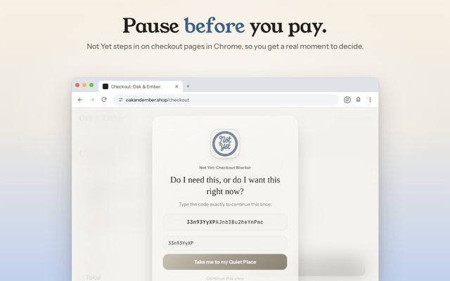

Chrome Extensions That Stop Impulse Buying: What Actually Works
Search the Chrome Web Store for "impulse buying" and you'll find a handful of small extensions, each with a different idea about how to slow you down. Some make you wait, some hide the buy button, some ask questions, and some block the store outright. They aren't interchangeable. The kind that helps depends on where your spending actually goes wrong.
Full disclosure: we make one of them, Not Yet: Checkout Blocker. This guide covers the whole category honestly, including where a different kind of tool is the better fit.
1. Delay Timers
A timer extension holds the checkout for a set time, often 10 to 60 seconds, then lets you through. It's the simplest idea and the easiest to set up.
The catch is that waiting takes no attention. You can sit through a countdown while still looking at the item, and after a few days most people stop noticing the wait at all. Timers help most when the problem is pure speed, like one-click buying late at night.
2. Button Hiders
These remove or cover "Add to cart" and "Buy now" buttons, and some hide prices too. When they work, they're strong: there's nothing to click.
They're usually built for one store, and they can break when that store changes its page. Hiding buttons everywhere also gets in the way of the purchases you do need to make, so people tend to switch them off.
3. Checklists and Questions
Some extensions show a short list before checkout: Do I need this? Can I afford it? Would I still want it next week? Questions like these are the heart of most advice on impulse spending, and reading them at the right moment can work well.
The weakness is that a list can be clicked through without reading it. If you find yourself tapping "Yes, yes, yes" on autopilot, the questions have stopped doing their job.
4. General Website Blockers
Blockers like LeechBlock NG and BlockSite aren't made for shopping, but plenty of people use them for it. They block whole sites, on a schedule or after a time limit.
That's the right tool for a store that's a problem the moment you open it, the endless-scroll fashion site or the deal-of-the-day page. It's a blunt tool for everything else. A site blocker can't tell a checkout from a product page, so blocking every store you use also blocks order tracking, returns, and reading reviews.
5. Checkout Pauses That Take Attention
This is the kind we built. Not Yet recognizes checkout and payment pages on its own, on any store, and covers them with a pause screen. To continue, you retype a freshly generated code, character for character. It's different every time, so it can't be memorized or waited out. Typing it takes about as long as a timer, but it takes your attention too, and that's the moment people tend to notice what they're about to do.

If a code isn't the right kind of friction for you, Not Yet can show a few reflection questions in your own words or a wait timer instead. Browsing stays open, so you can still track an order or start a return. For stores that are a problem before checkout, it can block the whole site or set a time limit too, which covers most of what a general blocker would do.
What to Look For Before You Install One
- It works on the stores you actually use. A tool built for one store won't help on the others, and impulse spending tends to move to wherever the friction isn't.
- It catches the checkout on its own. If you have to list every store's checkout page by hand, gaps are guaranteed.
- It's hard to switch off in the moment. Every one of these can be disabled from chrome://extensions. What matters is whether the settings inside it can be loosened at 11pm with a full cart. Not Yet's Guard Mode puts a PIN in front of anything that makes blocking weaker.
- It gives you somewhere to go. A pause works better with a next step than with a dead end. Not Yet's pause screen links to your Quiet Place, a calm page with a few things to do instead.
- It respects your privacy. These extensions can read the pages you shop on. Check the privacy policy and the permissions before you install one.

Which Kind Fits You
- You buy in seconds without thinking: a checkout pause or a timer. The pause takes more attention.
- One store is the problem: a site blocker, or a whole-site block in Not Yet.
- The hours of browsing are the problem: a time limit.
- You know the questions but skip them: a pause that makes you answer in your own words, rather than tick a box.
Not Yet is free on Chrome: the checkout pause, all 14 store categories, whole-site blocks, and time limits. Premium, $39.99 once, adds Guard Mode and a few extras. It has no account, sends nothing anywhere, and works on Windows, Mac, Linux, and ChromeOS.
Common Questions
Is there a Chrome extension that stops impulse buying?
Yes. Several extensions add friction before you buy: delay timers, button hiders, checklists, site blockers, and checkout pauses like Not Yet: Checkout Blocker, which makes you retype a fresh code on any checkout page.
Can a regular website blocker stop online shopping?
It can block a store completely, which works for a site that's a problem the moment you open it. It can't tell a checkout from a product page, so blocking every store you use also blocks order tracking, returns, and reviews.
Do these extensions see what I buy?
Some can read the pages you visit, so check each one's privacy policy. Not Yet has no account and no server: it checks the page in your browser, and your settings and history stay on your computer.